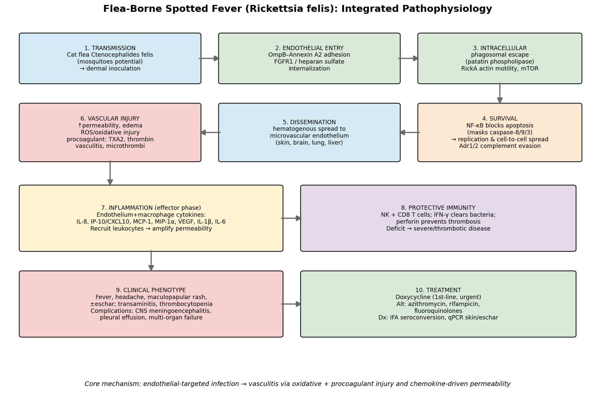

Pathophysiology and Clinical Mechanisms of Flea-Borne Spotted Fever
1. Summary (Answer to the Research Question)
Flea-Borne Spotted Fever (FBSF) is an emerging rickettsiosis caused by Rickettsia felis, an atypical, plasmid-bearing spotted-fever-group (SFG) obligate intracellular Gram-negative bacterium transmitted primarily by the cat flea Ctenocephalides felis (with mosquitoes such as Anopheles gambiae as candidate vectors), and epidemiologically entangled with malaria in sub-Saharan Africa. Its core disease mechanism is an endothelial-targeted vasculitis: after dermal inoculation the bacterium adheres to and invades microvascular endothelial cells (OmpB–Annexin A2 adhesion; FGFR1/heparan-sulfate–dependent entry), escapes the phagosome and moves intracellularly by RickA-driven actin polymerization, and subverts host death programs by activating NF-κB to block a masked caspase-8/9/3 apoptotic cascade, allowing replication and cell-to-cell spread. Disseminated endothelial infection produces increased vascular permeability, reactive-oxygen-species (ROS)–mediated oxidative injury, and a procoagulant/platelet-activated state (thromboxane A2, thrombin, endothelin-1) that manifests clinically as fever, headache, maculopapular rash, and—when severe—CNS meningoencephalitis, pleural effusion, and multi-organ failure. A Th1/cytotoxic immune axis (NK and CD8⁺ T cells via IFN-γ, with NK-derived perforin) controls the infection and protects the vasculature, while chemokines (IL-8, IP-10, MCP-1, MIP-1α) and VEGF amplify inflammation and permeability. Doxycycline is the mechanism-based, life-saving first-line therapy.
2. Key Findings (with Statistical/Experimental Evidence)
Etiology, vectors, and epidemiology
- R. felis is a distinctive SFG rickettsia with a conjugative plasmid (pRF), diverse-origin genes, and a low optimal growth temperature (<32 °C) [PMID 27155905]. The cat flea is the main reservoir/vector; ~26% of C. felis in Sicily carried R. felis DNA [PMID 25203839]. An. gambiae mosquitoes acquire, maintain (qPCR-positive to day 15), and transmit R. felis by bite (transient rickettsemia in mice) [PMID 26056256].
- In Africa, R. felis is a common cause of "fever of unknown origin," with prevalence rising from ~1% (France/N. Africa) to ~15% (rural Senegal) and strong geographic/seasonal correlation with malaria [PMID 24188709].
Molecular and cellular pathways of infection
- Adhesion/invasion: Endothelial surface Annexin A2 is the adherence receptor; OmpB is the bacterial ligand (AFM + in vivo) [PMID 31253864]. Internalization requires FGFR1 and heparan-sulfate proteoglycans; heparinase and the FGFR inhibitor AZD4547 reduce entry and lower pulmonary bacterial burden in vivo [PMID 28806774].
- Intracellular lifestyle/virulence genes: The genome encodes RickA (Arp2/3 actin nucleator), patatin-like phospholipase, ankyrin/tetratricopeptide effectors, toxin–antitoxin systems, and confirmed beta-lactamase, hemolytic, and actin-motility phenotypes [PMID 15984913, 16481487]; strain diversification tracks arthropod host [PMID 25477419]. mTOR (mTORC1/mTORC2) is activated in infected endothelium [PMID 33003310].
- Survival switch: Infection activates NF-κB, which prevents apoptosis of infected endothelium; NF-κB inhibition unmasks apical caspases 8/9 and executioner caspase 3 (mitochondrial cytochrome-c/PARP pathway, peak 12 h), killing infected cells [PMID 9539792, 12819104]. Adr1/Adr2 adhesins evade complement via vitronectin/factor H [PMID 28662039].
Vascular injury and inflammation (effector phase)
- Pathogenetic sequence: dermis → hematogenous dissemination → vascular endothelial cells (brain, lung) → increased permeability and edema [PMID 12860594].
- Oxidative injury: infected endothelium shows glutathione depletion and increased intracellular peroxide [PMID 9720025].
- Procoagulant state: MSF patients show TXA2-dependent platelet activation, thrombin generation, and endothelial dysfunction → vasculitis and microthrombi [PMID 8584998].
- Human cytokine signature: R. felis mono-infection significantly elevates IL-8, IP-10, MCP-1, MIP-1α, VEGF [PMID 29736763]; infected macrophages add IL-1β and IL-6 [PMID 11953398].
Protective immunity and severity
- NK and CD8⁺ T cells clear rickettsiae via IFN-γ; NK-derived perforin prevents infection-induced thrombosis. NK-deficient mice show impaired clearance, low IFN-γ, and severe hepatic thrombosis [PMID 22617213].
Clinical phenotypes, progression, diagnosis, and treatment
- Phenotype: fever, fatigue, headache, maculopapular rash (±eschar); labs show transaminitis, thrombocytopenia, elevated CRP/ESR, hypoalbuminemia [PMID 42715280, 33269795]. Complications: pleural effusion [PMID 42715280], CNS meningoencephalitis (usually >1 week; seizures, meningeal enhancement, pleocytosis) [PMID 39447222], neurological involvement/multi-organ failure [PMID 30419355].
- Diagnosis: IFA seroconversion (4-fold IgG rise); skin/eschar qPCR (~48–55% positive) far outperforms whole-blood qPCR (~5–6%) because rickettsemia is low-level [PMID 25706392, 32682398].
- Treatment: Doxycycline first-line, given promptly (severe prognosis if delayed) [PMID 30419355]; alternatives azithromycin, rifampicin, fluoroquinolones (documented R. felis response) [PMID 42715280]; doxycycline malaria prophylaxis also protects against R. felis [PMID 24188709].
3. Supported and Refuted Hypotheses
Supported (evidence-backed): 1. FBSF pathology is driven by endothelial infection → vasculitis rather than a secreted toxin. 2. Entry uses defined host receptors (Annexin A2, FGFR1/HSPG) — druggable interfaces. 3. NF-κB anti-apoptosis is essential for the pathogen to sustain its target cell. 4. Tissue damage arises from oxidative + procoagulant endothelial injury amplified by chemokines/VEGF. 5. IFN-γ/perforin (NK, CD8) immunity gates disease severity; deficits → thrombotic/severe disease. 6. Doxycycline efficacy reflects intracellular penetration + protein-synthesis inhibition.
Refuted / not supported: No evidence that FBSF causes damage via a classical exotoxin or via disseminated intravascular coagulation/thrombosis-mediated ischemia as the dominant mechanism (hemostatic mechanisms largely prevent major hemorrhage) [PMID 12860594].
4. Limitations and Future Directions
- Much mechanistic detail derives from related SFG species (R. rickettsii, R. conorii, R. parkeri) as models; R. felis-specific in vivo studies remain sparse.
- The role of mosquitoes in natural human transmission is unproven; ecology/epidemiology remain incompletely defined.
- Eschar frequency and the earliest dermal events for R. felis specifically are under-characterized.
- Host-directed therapy (FGFR inhibition, calcium-channel/vascular-barrier modulation, antioxidant/antithrombotic adjuncts) is promising but unproven clinically; one candidate (benidipine) worsened outcomes in a model, underscoring caution.
- Future work: R. felis-specific animal models, prospective clinical cohorts distinguishing FBSF from murine typhus and malaria, and biomarker validation (IL-8/VEGF/IP-10) for severity.
Figure: fbsf_pathophysiology_schematic.png — integrated 10-stage mechanistic model.
Artifacts
- OpenScientist final report
- OpenScientist final report
- OpenScientist fbsf pathophysiology schematic

Reference Validation
Checked with linkml-reference-validator 0.3.0rc3.
Table (click to expand)
| Outcome | Count |
|---|---|
| References checked | 21 |
| Resolved | 21 |
| Unresolved (possible confabulation) | 0 |
| Unverifiable | 0 |
| References weighed for topical relevance | 21 |
| On topic | 8 |
| Off topic | 0 |
All extracted references resolved successfully.
Term Validation
No ontology term identifiers were found in this report.